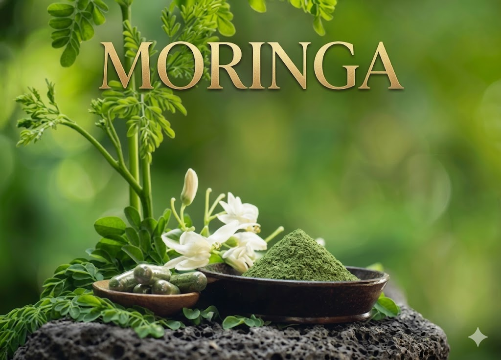
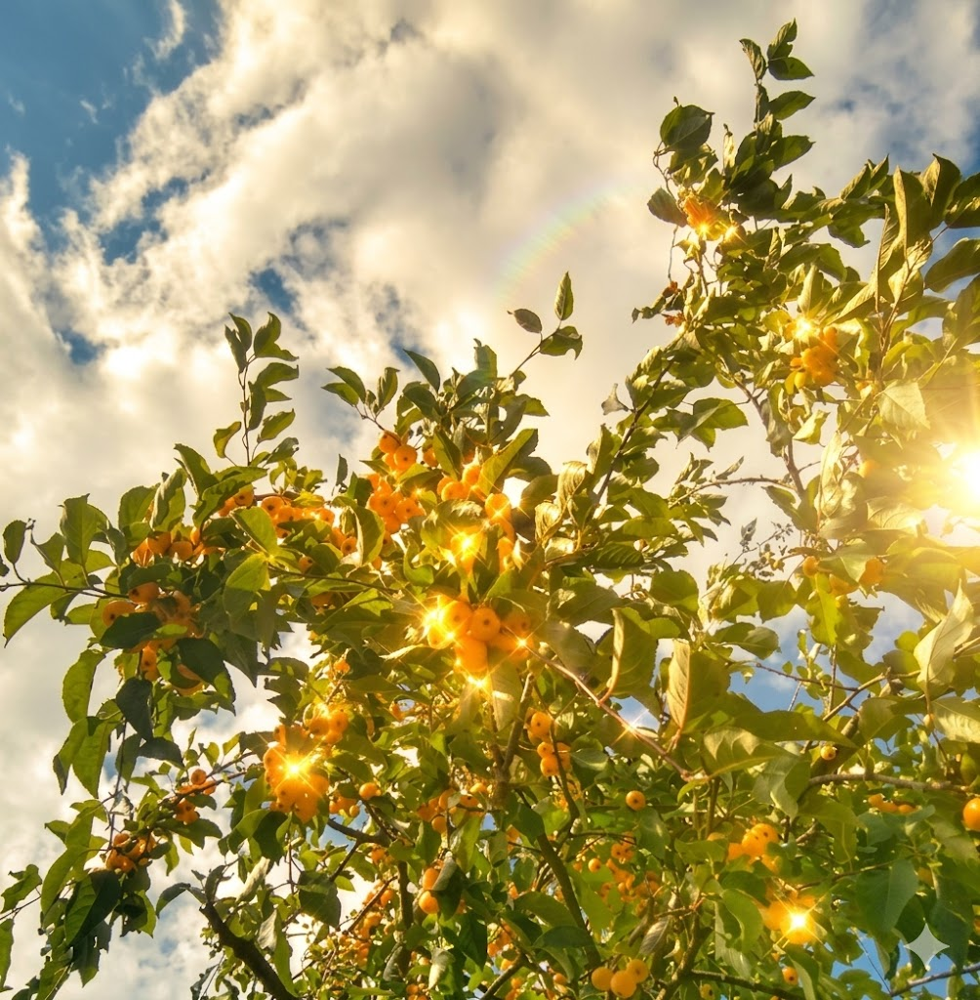
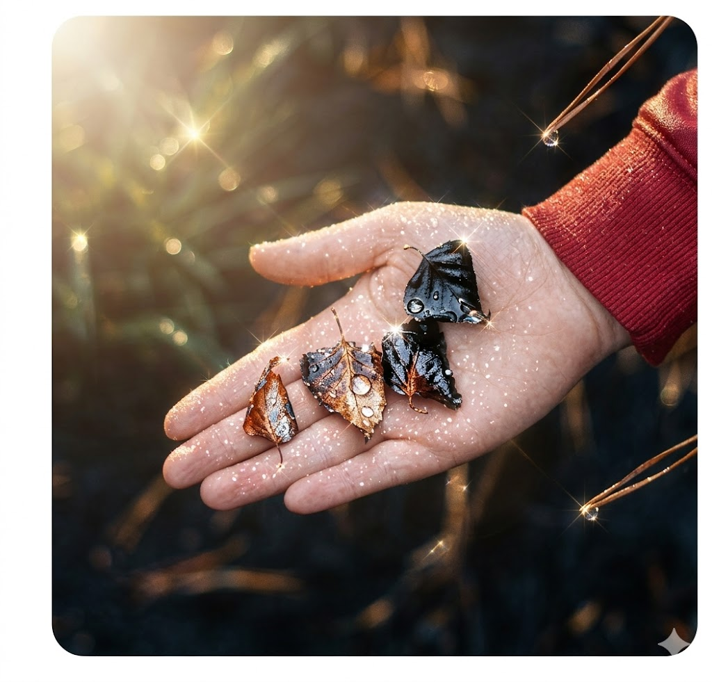
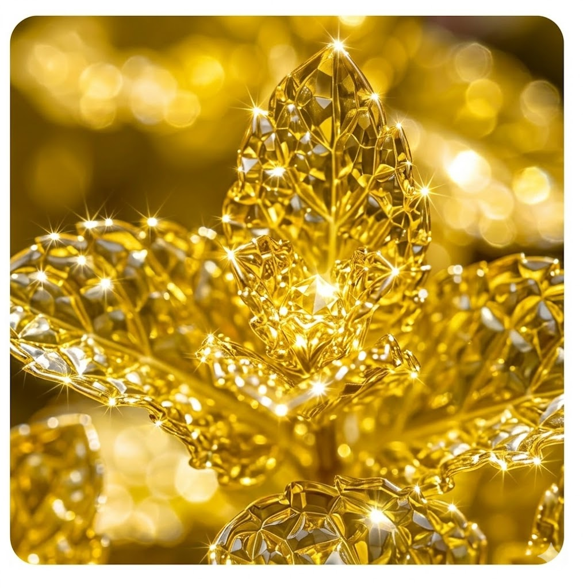
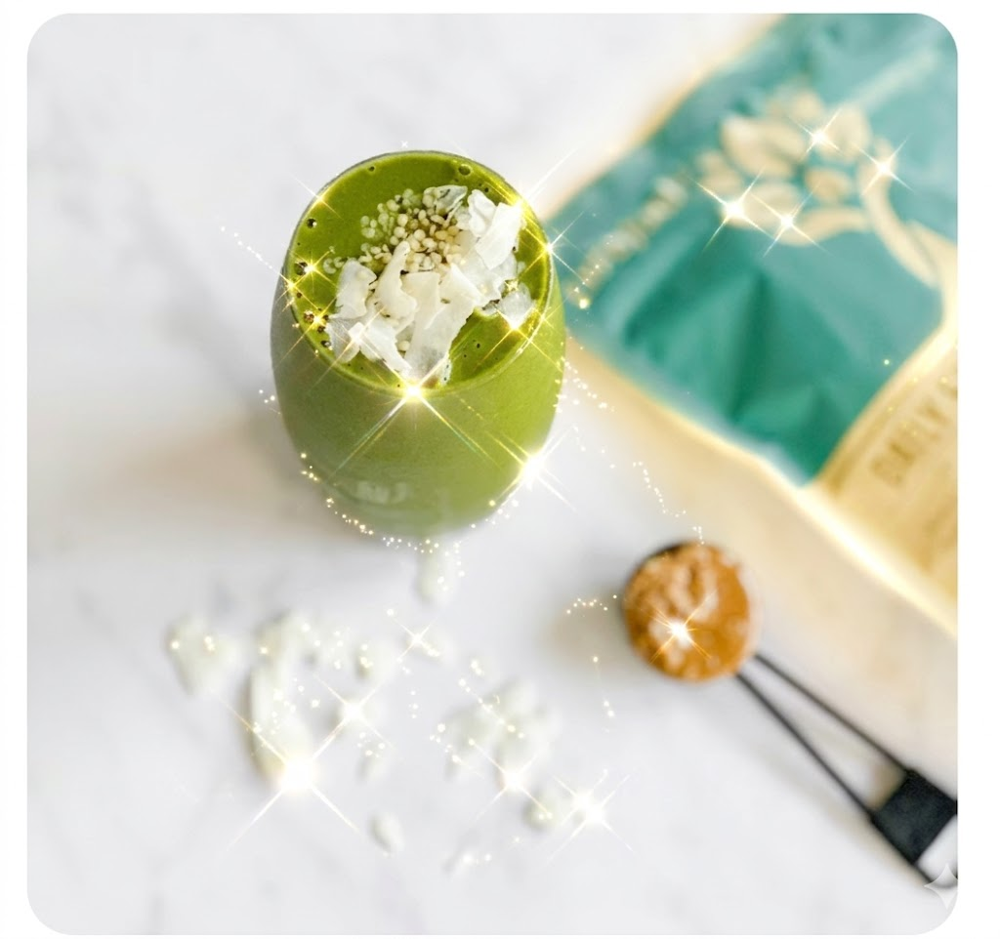

Snapshots showcasing our pure moringa leaf powder and its journey from nature to you.





1. Sourced from Nature: Our Moringa is grown in mineral-rich soil, ensuring that every leaf is packed with the maximum amount of vitamins and minerals possible.
2. Traditional Harvesting: We believe in hand-picking our leaves to ensure only the highest quality, greenest leaves make it into our final powder.
3. Low-Temperature Drying: To preserve the delicate enzymes and antioxidants, our leaves are dried at low temperatures in a shade-controlled environment.
4. Nutrient Density: Did you know Moringa contains 7 times more Vitamin C than oranges? It is truly nature's most powerful multivitamin.
5. Essential Amino Acids: Unlike most plant sources, Moringa contains all nine essential amino acids, making it a complete protein source for vegans.